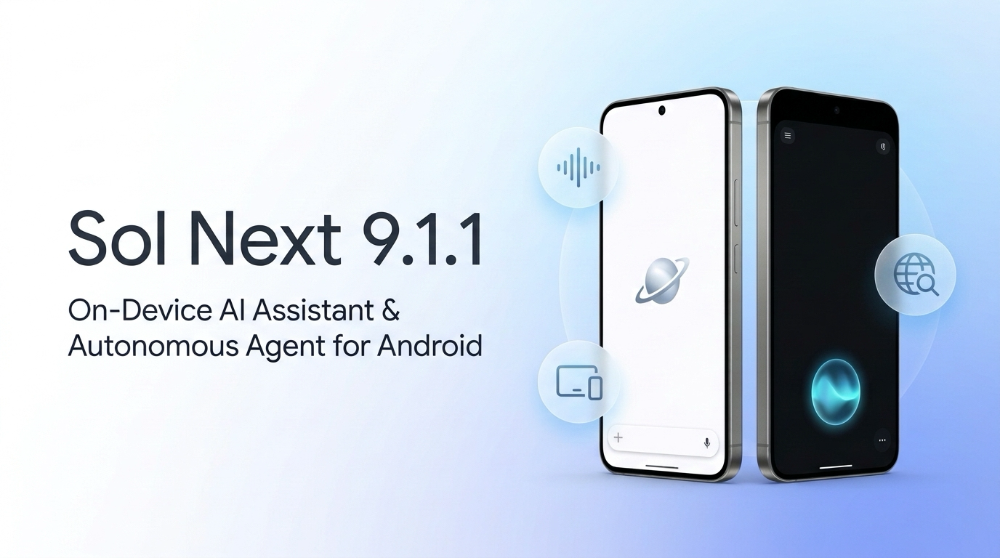
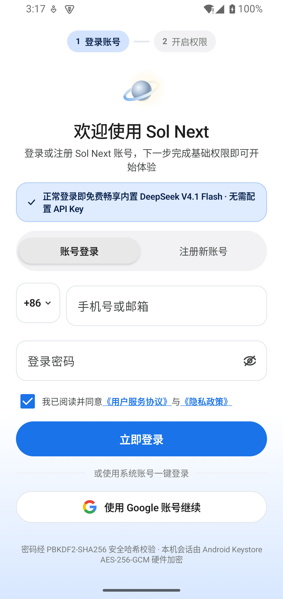
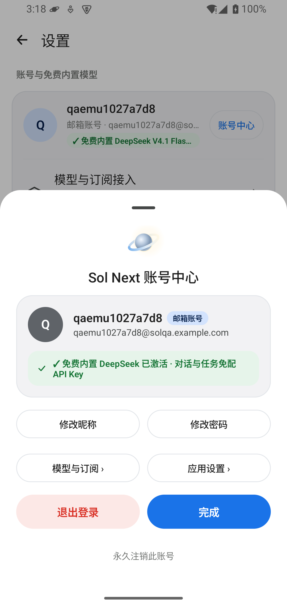
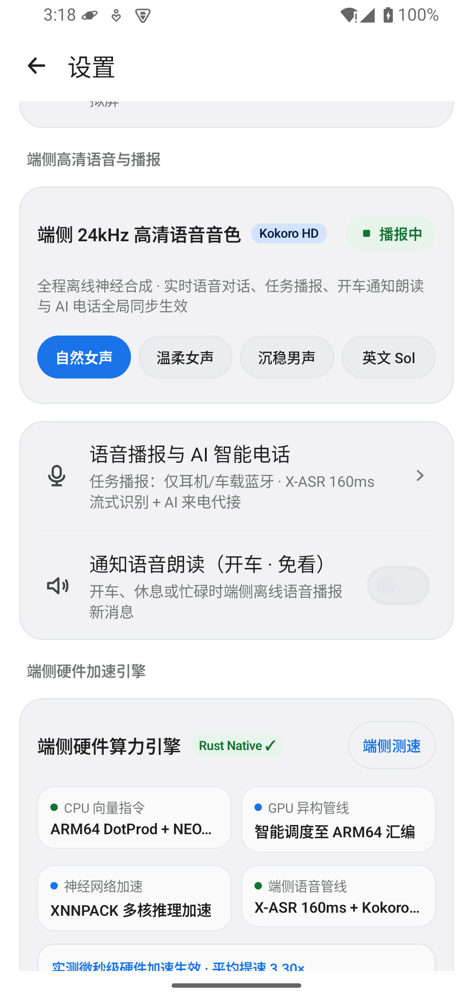
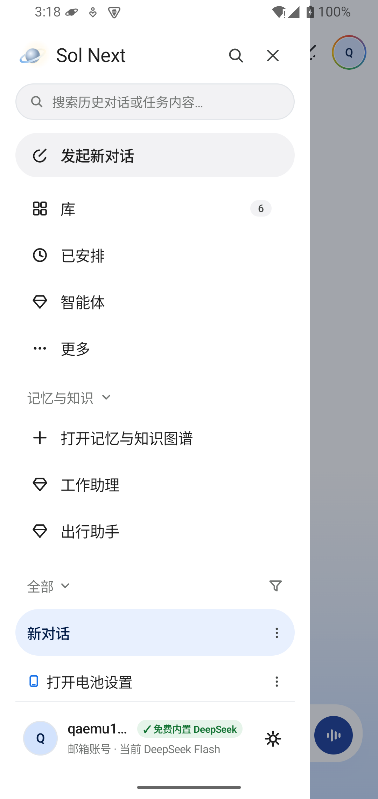
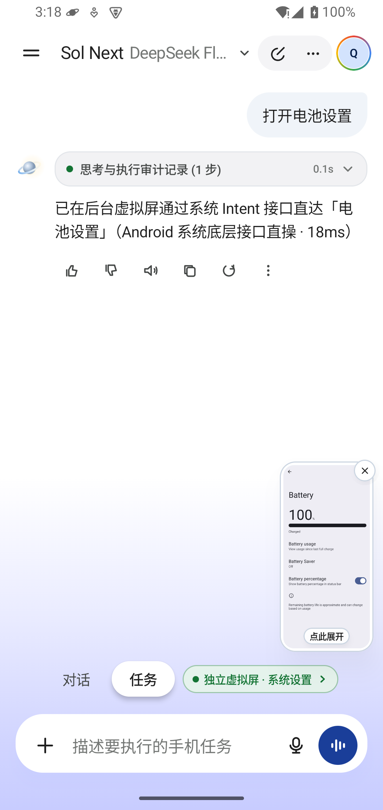
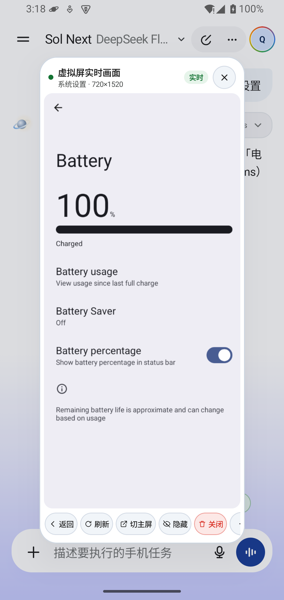
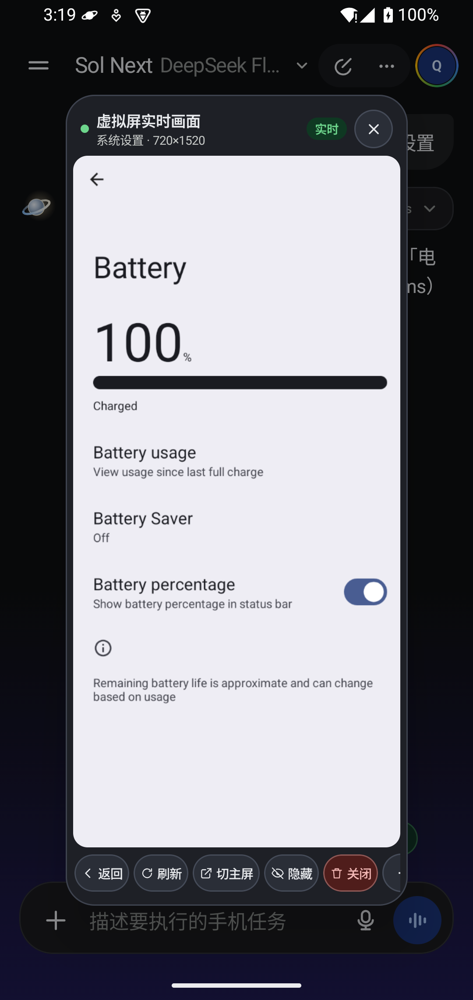
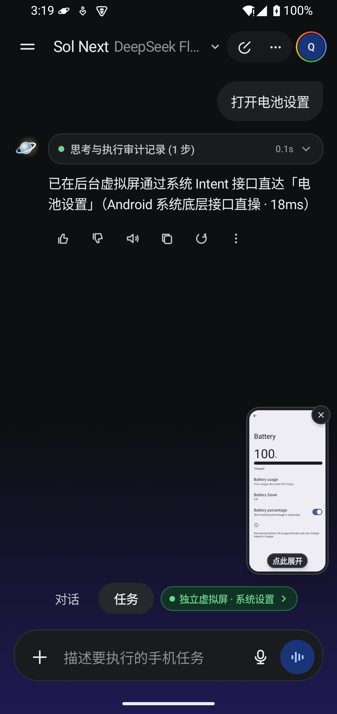

🎙️ 2026 SOTA 24kHz 端侧高清语音
APK 原生内置 GTCRN + Silero VAD v5 + X-ASR 160ms（实测 RTF 0.20）+ Kokoro v1.1 24kHz HD（103 音色、RTF 0.701、4 音色一键试听、零爆音淡入淡出），免配任何云端语音 API。

2026 SOTA 24kHz 端侧实时语音（X-ASR 160ms + Kokoro v1.1）· 手写 ARM64 NEON/SVE2 汇编 + Vulkan Compute + NNAPI NPU 算力内核 · Android 13 零抢输入法后台独立虚拟屏 · 成熟云端账号正常登录即享免费内置 DeepSeek 与 Brave 实时联网搜索。
APK 原生内置 GTCRN + Silero VAD v5 + X-ASR 160ms（实测 RTF 0.20）+ Kokoro v1.1 24kHz HD（103 音色、RTF 0.701、4 音色一键试听、零爆音淡入淡出），免配任何云端语音 API。
libsol_kernel.so v600 手写 ARM64 NEON / DotProd / I8MM / SVE2 内联汇编（最高 6.04× 加速），协同 Vulkan 1.1 Compute Shader 与 NNAPI NPU，设置页可一键跑分验证。
构建链升级为纯 Rust sol-builder；云端世界模型与账号服务全面重写为 Rust 2024（sol-world-rs 仅 16.7MB 内存、降幅 150.7×；sol-engine-rs 冷算 1.76ms、提速 608×）。
PBKDF2-HMAC-SHA256 云端手机/邮箱密码登录 + 原生 Google 登录 + 交互式协议弹窗 + 完整账号中心，正常登录即免费激活内置 DeepSeek 与 Brave 实时联网搜索。
Android 13 及以下采用零 MotionEvent 无障碍直传文本与确认，绝不抢占主屏键盘；Android 14+ 同步启用 DISPLAY_IME_POLICY_HIDE，右下角折叠浮窗零遮挡。
支持 AI 拨打/代接/暗语传话/反诈预警、三档任务语音播报（默认仅耳机与车载蓝牙）、抽屉常驻搜索、BYOK 一键测速与 Android Keystore AES-256-GCM 硬件加密。

成熟账号登录手机/邮箱密码 + Google
账号中心✓ 免费内置 DeepSeek 已激活
算力跑分 & 24kHz 试听ARM64/Vulkan/NPU · Kokoro
侧边抽屉搜索历史会话秒搜直达
右下角零遮挡 PiP1ms 系统 0 + DeepSeek 回复
展开虚拟屏（浅色）零黑屏 · 5 枚胶囊零裁切
展开虚拟屏（深色）#1E2026 边框自适应
深色折叠 PiPAndroid 13 零抢输入法Signing Cert SHA-256: d7a6fed0ff42843a20329944f2b1741060048610546df6cf2ad8179cfe335478 Sol-Next-v9.3.0-public-arm64.apk (386 MB): 92c51afd5f60233bc73b164b291a91334c02beca58953adc614ae76654ddfbc2 Sol-Next-v9.3.0-public-universal.apk (424 MB): 504cc6dcbb52b02dd3ccf3bc12bb59597426079f79c2d6d47dc4803cbfbf0c3a